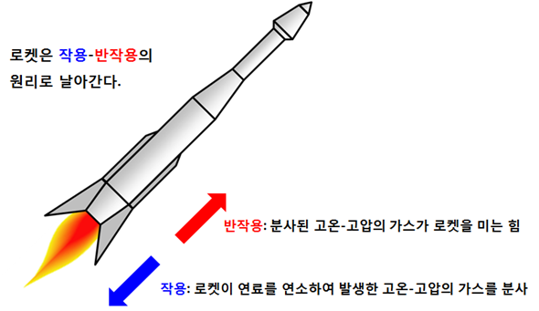
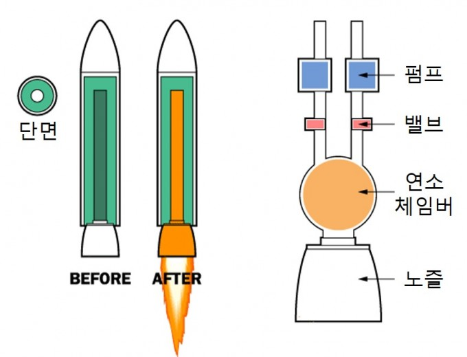

1. 과학이론
-작용과 반작용을 이용한 로켓발사
2.선택한 이유
-누리호를 보고 로켓에 관심을 가지는 계기가 되었고
로켓을 직접 만들기 위해 이론을 먼저 알아야했습니다.
그리고 제 진로가 소프트웨어와 연관을 짓기 위해
아두이노를 이용하여 로켓의 원리방식과 로켓 엔진의 움직임을
안정적으로 제어하는 코드를 만들고
보고서를 웹사이트로 만들어 서버에 올림으로써 제 진로와 연관을 짓기에
도움을 주는 방식이었습니다
3.이론적 배경
-작용과 반작용을 쉽게 설명하자면 작용과 반작용은
물체 A가 물체 B에게 힘을 주면 물체 B도 물체 A에게 똑같은 힘을 주게 되는데,
서로에게 가하는 힘의 방향은 힘을 가한 방향의 반대라는 것을 말합니다.
이 이론을 로켓엔진에 적용시켜본다면 분사기가 있는 산화제와 연료가 나오는 곳인
연소체임버에서 점화가 되어 팽창하는 힘이 노즐을 통해 나오고
그 반대 방향으로 흐르는 힘을 로켓을 쏘아올리는데 쓰입니다.
(자료:https://www.scienceall.com/%EC%9B%90%EB%A6%AC
-%E2%91%A0-%EB%A1%9C%EC%BC%93-%EB%B0%9C%EC%82%AC-%EC%9B%90%
EB%A6%AC-%EC%96%B4%EB%A0%B5%EC%A7%80-%EC%95%8A%EC%95%84%EC%9A%94/)
그리고 제2의 법칙인 가속도의 법칙으로 같은 힘을 가할때 질량이 작을수록
움직임이 더 크게 나타난다.
이 원리들로 로켓을 발사하는 것입니다.
연소실에서 일어난 작용이 노즐로 나오는 압력으로 반작용이 일어납니다.

출처: https://www.google.com/url?sa=i&url=https%3A%2F%2Fb
runch.co.kr%2F%40homoscience%2F13&psig=AOvVaw1lZSIoPGPP
3ftyMEvL3ZTe&ust=1635898532361000&source=images&cd=vfe&ve
d=0CAsQjRxqFwoTCICb2Ymz-PMCFQAAAAAdAAAAABAD
이러한 로켓들도 종류가 두 가지가 있습니다.
한 가지는 액체엔진을 사용한 로켓이고
다른 한 가지는 고체엔진을 사용한 로켓입니다
먼저 액체엔진의 장점은 발사되고 정지궤도에 안착하고 싶을 때 마음대로 엔진을
끌 수 있는 점과 고체엔진의 비해서 화력이 월등하게 좋습니다,
하지만 액체엔진에는 그 만큼 많은 기술과 자본, 시간이 고체엔진보다 훨씬 든다는
점이 제일 단점인 것 같습니다.
고체엔진의 장점은 몸체에 다른 기관 없이 고체연료만 집어 넣을 수 있는
연료탱크만 있으면 충분히 잘 날아갈 수 있고 기술과 자본, 시간이 적게 드는 엔진입니다.
단점으론 멈출 수 없다는 게 제일 단점입니다, 궤도에 안착해도 엔진이 계속
점화되면 궤도가 바뀔 수 있기 때문입니다.
작용과 반작용을 쉽게 알아볼 수 있는 엔진은 고체엔진으로
한 눈에 봐도 아주 잘 알 수 있습니다.

왼쪽은 고체엔진, 오른쪽은 액체엔진입니다.
출처: https://www.google.com/url?
sa=i&url=https%3A%2F%2Fm.dongascience.com%
2Fnews.php%3Fidx%3D25370&psig=AOvVaw0lBIymX7wlmffXL3vcYt7r&ust=
1635903561629000&source=images&cd=
vfe&ved=0CAsQjRxqFwoTCIjY4OfF-PMCFQAAAAAdAAAAABAD
이제 아두이노를 이용하여 엔진의 방향을 조절하는 코드를
독학하여 이론을 이해하도록 하겠습니다.
먼저 로켓을 안정적으로 올라가기 위해 로켓엔진의 방향을
움직이는 코드, 즉 자세제어장치를 만들어야합니다,
영어로는 Thrust Vector Control이라고 줄여서 TVC라고 부릅니다.
TVC는 로켓엔진의 고도의 기술이라고 말하지만 간단한 모터로 대충 구현이 가능한 기술입니다.
TVC가 로켓에 대표적으로 쓰이는 곳은 space X로 자세제어장치로
역추진착륙을 하는 것으로 대중들에게 많이 알려져 있습니다.
코드를 짜는데 "Park Lab"분에게 영상으로 도움을 받았습니다.
1.visual studio 실행
-아두이노를 코딩하기 위해 visual studio를 실행합니다
참고로 visual studio는 코딩에 도움을 주는 프로그램입니다.
더해서 아두이노는 아두이노 기판에 코드를 수식하여 기계가 움직일 수 있도록 만들어 줍니다.
-visual studio에서 서보모터 제어를 위한 C언어 기반의 코드를 짜줍니다.
//에 쳐져 있는 글자는 이해를 돕기위한 문장입니다.
이 명령어 전체가 엔진의 방향을 안정적으로 움직이게 만드는 서보모터 명령어들 입니다.
국내, 해외 유튜브를 보면서 제일 간단한 코드형식으로 TVC코드를 배웠는데...
이게 진짜 될지는 실제로 해봐야 합니다.
제 코드와 비슷한 아두이노 참고 영상입니다.
제가 아는 분에게 물어보니 "충분히 될 것 같다"라고 말하시곤 가시더라고요.
https://youtu.be/V-UCxhatmuQ
5.깨달은 점과 배운 점
-로켓을 만드는데 많은 노력이 필요하고 기술력이 어마어마하게 많아야겠다는
생각이 들면서 전 아직 배워야 할 것들이 많구나라고 다시 느낀 활동이었습니다.
제가 많이 노력해서 제 진로인 소프트웨어학과로 들어가 게임, 로봇, 로켓 등등
많은 코딩을 시도할 때 지금의 코드를 짜 본 경험이 나중에 코드를 짤 때 또는 대회를 나갈 때
매우 잘 쓸 수 있을 것 같습니다.
앞으로 많은 도전을 시도하면서 코딩에 관한 문제들을 해결해보고 싶습니다.
활동으로 제가 아두에 관한 코딩을 다시 시도해 보면서 많은 실행실패가
나올 때마다 유튜브로 보고 배우다가 안되면 구글로 보고 배우다가
그것도 안되면 노트북 앞에서 하루종일 안되는 부분만 캐치해서 다룬 것 같습니다
로켓에 관한 부분, 웹 사이트에 관한 부분, 코딩에 관한 부분, 등등 많은 자료를
찾고 헤매는 과정에서 문제해결 방식의 레벨을 올린 것 같습니다.
6.본인이 변화된 점, 추가적으로 하고 싶은 탐구
-이번 활동으로 저는 더 많은 활동에 대한 끈기를 가진 것 같습니다.
제가 웹사이트를 거의 오랜만에 만들어보는데 많은 어려움에 도달해도
다시 될거라 믿으면서 "좀만 더 하면 된다"라는 생각으로 명령어가 말을 안 듣는 문제나
사진이랑 동영상이 짤려서 나왔을 때 계속 그 생각만 했던 것 같습니다, 이 한 문제가
몇 시간동안 쓰이는데 매우 귀찮고 눈이 아팠습니다, 그래도 웹사이트로 써보는 보고서라는
느낌이 신선하고 좋은 것 같아, 참아 버릴 수 없었습니다.
제가 이 끈기로 웹사이트 보고서를 만들 수 있었던 것 같습니다.
그리고 제가 나중에 시간이 남는 다면 로켓을 직접 만들어보고 싶습니다,
그러기 위해서 로켓에 대한 더 많은 탐구를 더 열심히 찾고 궁금증을 해결해 나가
결국 액체엔진을 만들어 하늘에 쏘아오릴 때까지 많은 시간과 노력이 있을 것이지만
저에게 시간만 있다면 엔진에 연료를 주입해주는 터보펌프의 원리와 아두이노 고도를 측정해주는
센서로 정해진 높이에 페어링이 분리되면서 낙하산이 펴지는 코드를 직접 짜보고 싶습니다.
웹사이트 코드 명령어들....
메모장으로 짠 명령어들...
깃허브(웹사이트 공공 서버)에 올리는데...눈물이..
ㅠㅠㅠㅠㅠㅠㅠㅠㅠㅠㅠㅠㅠㅠ
이상으로 1106김현진의 웹사이트 보고서였습니다.
감사합니다. -웹사이트 만드는데 8일소요
 -visual studio에서 서보모터 제어를 위한 C언어 기반의 코드를 짜줍니다.
//에 쳐져 있는 글자는 이해를 돕기위한 문장입니다.
-visual studio에서 서보모터 제어를 위한 C언어 기반의 코드를 짜줍니다.
//에 쳐져 있는 글자는 이해를 돕기위한 문장입니다.
 이 명령어 전체가 엔진의 방향을 안정적으로 움직이게 만드는 서보모터 명령어들 입니다.
국내, 해외 유튜브를 보면서 제일 간단한 코드형식으로 TVC코드를 배웠는데...
이게 진짜 될지는 실제로 해봐야 합니다.
제 코드와 비슷한 아두이노 참고 영상입니다.
제가 아는 분에게 물어보니 "충분히 될 것 같다"라고 말하시곤 가시더라고요.
https://youtu.be/V-UCxhatmuQ
5.깨달은 점과 배운 점
-로켓을 만드는데 많은 노력이 필요하고 기술력이 어마어마하게 많아야겠다는
생각이 들면서 전 아직 배워야 할 것들이 많구나라고 다시 느낀 활동이었습니다.
제가 많이 노력해서 제 진로인 소프트웨어학과로 들어가 게임, 로봇, 로켓 등등
많은 코딩을 시도할 때 지금의 코드를 짜 본 경험이 나중에 코드를 짤 때 또는 대회를 나갈 때
매우 잘 쓸 수 있을 것 같습니다.
앞으로 많은 도전을 시도하면서 코딩에 관한 문제들을 해결해보고 싶습니다.
활동으로 제가 아두에 관한 코딩을 다시 시도해 보면서 많은 실행실패가
나올 때마다 유튜브로 보고 배우다가 안되면 구글로 보고 배우다가
그것도 안되면 노트북 앞에서 하루종일 안되는 부분만 캐치해서 다룬 것 같습니다
로켓에 관한 부분, 웹 사이트에 관한 부분, 코딩에 관한 부분, 등등 많은 자료를
찾고 헤매는 과정에서 문제해결 방식의 레벨을 올린 것 같습니다.
6.본인이 변화된 점, 추가적으로 하고 싶은 탐구
-이번 활동으로 저는 더 많은 활동에 대한 끈기를 가진 것 같습니다.
제가 웹사이트를 거의 오랜만에 만들어보는데 많은 어려움에 도달해도
다시 될거라 믿으면서 "좀만 더 하면 된다"라는 생각으로 명령어가 말을 안 듣는 문제나
사진이랑 동영상이 짤려서 나왔을 때 계속 그 생각만 했던 것 같습니다, 이 한 문제가
몇 시간동안 쓰이는데 매우 귀찮고 눈이 아팠습니다, 그래도 웹사이트로 써보는 보고서라는
느낌이 신선하고 좋은 것 같아, 참아 버릴 수 없었습니다.
제가 이 끈기로 웹사이트 보고서를 만들 수 있었던 것 같습니다.
그리고 제가 나중에 시간이 남는 다면 로켓을 직접 만들어보고 싶습니다,
그러기 위해서 로켓에 대한 더 많은 탐구를 더 열심히 찾고 궁금증을 해결해 나가
결국 액체엔진을 만들어 하늘에 쏘아오릴 때까지 많은 시간과 노력이 있을 것이지만
저에게 시간만 있다면 엔진에 연료를 주입해주는 터보펌프의 원리와 아두이노 고도를 측정해주는
센서로 정해진 높이에 페어링이 분리되면서 낙하산이 펴지는 코드를 직접 짜보고 싶습니다.
이 명령어 전체가 엔진의 방향을 안정적으로 움직이게 만드는 서보모터 명령어들 입니다.
국내, 해외 유튜브를 보면서 제일 간단한 코드형식으로 TVC코드를 배웠는데...
이게 진짜 될지는 실제로 해봐야 합니다.
제 코드와 비슷한 아두이노 참고 영상입니다.
제가 아는 분에게 물어보니 "충분히 될 것 같다"라고 말하시곤 가시더라고요.
https://youtu.be/V-UCxhatmuQ
5.깨달은 점과 배운 점
-로켓을 만드는데 많은 노력이 필요하고 기술력이 어마어마하게 많아야겠다는
생각이 들면서 전 아직 배워야 할 것들이 많구나라고 다시 느낀 활동이었습니다.
제가 많이 노력해서 제 진로인 소프트웨어학과로 들어가 게임, 로봇, 로켓 등등
많은 코딩을 시도할 때 지금의 코드를 짜 본 경험이 나중에 코드를 짤 때 또는 대회를 나갈 때
매우 잘 쓸 수 있을 것 같습니다.
앞으로 많은 도전을 시도하면서 코딩에 관한 문제들을 해결해보고 싶습니다.
활동으로 제가 아두에 관한 코딩을 다시 시도해 보면서 많은 실행실패가
나올 때마다 유튜브로 보고 배우다가 안되면 구글로 보고 배우다가
그것도 안되면 노트북 앞에서 하루종일 안되는 부분만 캐치해서 다룬 것 같습니다
로켓에 관한 부분, 웹 사이트에 관한 부분, 코딩에 관한 부분, 등등 많은 자료를
찾고 헤매는 과정에서 문제해결 방식의 레벨을 올린 것 같습니다.
6.본인이 변화된 점, 추가적으로 하고 싶은 탐구
-이번 활동으로 저는 더 많은 활동에 대한 끈기를 가진 것 같습니다.
제가 웹사이트를 거의 오랜만에 만들어보는데 많은 어려움에 도달해도
다시 될거라 믿으면서 "좀만 더 하면 된다"라는 생각으로 명령어가 말을 안 듣는 문제나
사진이랑 동영상이 짤려서 나왔을 때 계속 그 생각만 했던 것 같습니다, 이 한 문제가
몇 시간동안 쓰이는데 매우 귀찮고 눈이 아팠습니다, 그래도 웹사이트로 써보는 보고서라는
느낌이 신선하고 좋은 것 같아, 참아 버릴 수 없었습니다.
제가 이 끈기로 웹사이트 보고서를 만들 수 있었던 것 같습니다.
그리고 제가 나중에 시간이 남는 다면 로켓을 직접 만들어보고 싶습니다,
그러기 위해서 로켓에 대한 더 많은 탐구를 더 열심히 찾고 궁금증을 해결해 나가
결국 액체엔진을 만들어 하늘에 쏘아오릴 때까지 많은 시간과 노력이 있을 것이지만
저에게 시간만 있다면 엔진에 연료를 주입해주는 터보펌프의 원리와 아두이노 고도를 측정해주는
센서로 정해진 높이에 페어링이 분리되면서 낙하산이 펴지는 코드를 직접 짜보고 싶습니다.


 웹사이트 코드 명령어들....
메모장으로 짠 명령어들...
깃허브(웹사이트 공공 서버)에 올리는데...눈물이..
ㅠㅠㅠㅠㅠㅠㅠㅠㅠㅠㅠㅠㅠㅠ
이상으로 1106김현진의 웹사이트 보고서였습니다.
감사합니다. -웹사이트 만드는데 8일소요
웹사이트 코드 명령어들....
메모장으로 짠 명령어들...
깃허브(웹사이트 공공 서버)에 올리는데...눈물이..
ㅠㅠㅠㅠㅠㅠㅠㅠㅠㅠㅠㅠㅠㅠ
이상으로 1106김현진의 웹사이트 보고서였습니다.
감사합니다. -웹사이트 만드는데 8일소요